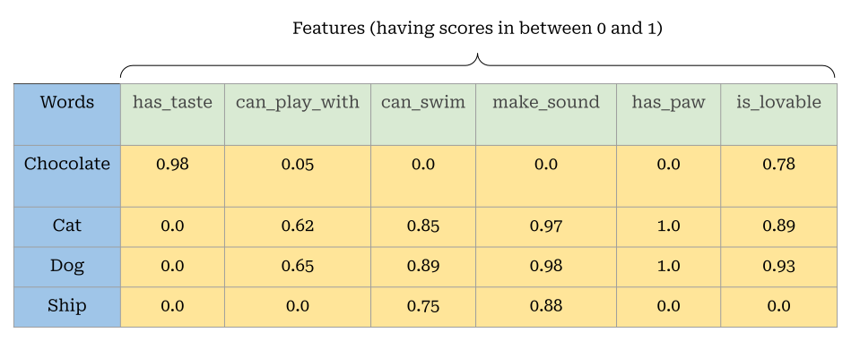
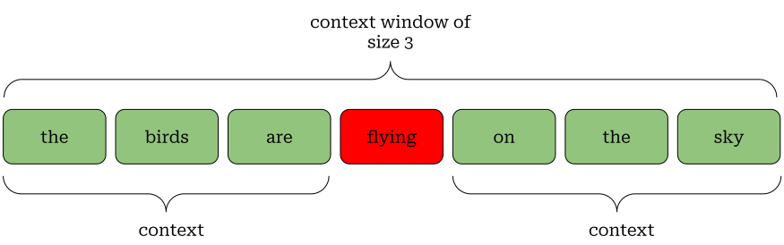
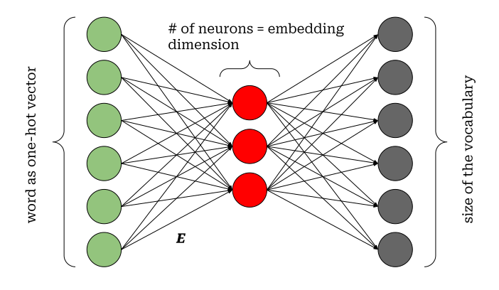

# imports
import re
from pprint import pprint
raw_text = """We are about to study the idea of a computational process.
Computational processes are abstract beings that inhabit computers.
As they evolve, processes manipulate other abstract things called data.
The evolution of a process is directed by a pattern of rules
called a program. People create programs to direct processes. In effect,
we conjure the spirits of the computer with our spells."""
# clean raw text
cleaned_text = re.sub(r"[\.\,\-]", " ", raw_text).lower().replace('\n',"")
data = cleaned_text.lower().split();
# source: https://pytorch.org/tutorials/beginner/nlp/word_embeddings_tutorial.htmlIntroduction
A computer algorithm is nothing but a sequence of carefully chosen steps having a specific goal, it needs some imput data to work on and produce some results. Achiving this goal depends on many many factors and representing the input data to the algorithm is one of them.
Neural networks, being some complex algorithms, are capable of performing many useful tasks with human languages when represented both as texts and sound waves. Some useful examples can be human sentiment detection from written text, language translation, image captioning etc.
In all these cases, one interesting thing is to know how such a massive amount of textual data are supplied to a network so that it understands the inner meaning just like a human.
In this post I will focus on various ways to repesent textual dataset to a network, starting from very naive to very efficient as well as logical.
Some important terminologies
Let us understand some basic yet important terminologies that are used while working with textual data. For the sake of convenience, we will consider English as the language to understand various concepts in this post, but the same are applicable for other languages too.
Corpus: A corpus is a collection of textual data. It typically refers to a group of sentences or paragraphs. For example, the messages we send to someone in any messaging platform can be considered together to form a corpus.
Token: A token is the most granular part of a corpus. Depending on the requirement, it can be a single character, a single word or even a single sentence. The process of creating tokens out of a corpus is called tokenization.
Vocabulary: A vocabulary is the set of unique (non-repetitive) tokens. Technically, it is that set which generates the entire corpus.
An example will help here to understand it better.
corpus = ['Mathematics is the language to understand the nature']
word_level_tokens = [
'Mathematics', 'is', 'the',
'language', 'to', 'understand',
'the', 'nature'
]
vocabulary = {'Mathematics', 'is', 'the', 'language', 'to', 'understand', 'nature'}Note that, the word the has appeared twice in the corpus and it is considered only once in the vocabulary.
Converting texts to numbers
Converting texts to numbers are required because computer can only handle numbers, although typically not in the form we give. It converts numbers (decimal numbers) to the binary form which is basically a sequence of zeros and ones, before performing any task.
Since the beginning of development of modern computers, we have something called ASCII table. This table used to have numeric representation of each character only in English but later on it has started supporting other languages as well.
Better ways to represent texts
ASCII codes are certainly useful to represent characters in the computers’ memory. But it does not fulfill the purpose while developing modern intelligent applications like a language translator.
In natural language processing, tokens are usually represented by numerical arrays or vectors. Let us understand the various ways to create such vectors.
Before proceeding further, let us consider a new corpus (a group of sentences quoted by Shakuntala Devi) with a word level tokenization as below:
corpus = [
'without mathematics, there’s nothing you can do',
'everything around you is mathematics',
'everything around you is number'
]
word_level_tokens = [
"without", "mathematics", "there's",
"nothing", "you", "can", "do",
"everything", "around", "you", "is",
"mathematics", "everything", "around",
"you", "is", "number"
]
sorted_vocabulary = [
'around',
'can',
'do',
'everything',
'is',
'mathematics',
'nothing',
'number',
"there's",
'without',
'you'
]
vocabulary_size = 11One-hot vector
This is the simplest way to convert tokens into a vector. One-hot vector, for a token, is a vector of dimension vocabulary_size (often denoted by |V|). In this vector, all the elements are 0’s except a single 1. The index that holds the 1 is called hot index and it is basically the index of the token in the vocabulary.
Example:
one_hot_for_around = [1, 0, 0, 0, 0, 0, 0, 0, 0, 0, 0]
one_hot_for_can = [0, 1, 0, 0, 0, 0, 0, 0, 0, 0, 0]
one_hot_for_number = [0, 0, 0, 0, 0, 0, 0, 1, 0, 0, 0]As you can imagnine, for a large corpus, one-hot vectors are very large dimensional sparse vectors.
Also, if we represent any text using one-hot vectors (technically a matrix made of one-hot vectors), then basically we are not considering word-word relationship or similarity.
Words (rather tokens) are considered independent chunks of the text for this kind of setup, but it is something that we do not like. Any language maintains some contexts through word-word relationships and those are completely ignored by one-hot representation.
If we try to measure the similarity between two words with the help of one-hot representation, we will always get zero, but that does not mean the words are very close on the semantic space.
Embedding vector
As you have observed, one-hot vectors do not consider context, so we definitely need something meaningful for representing the tokens mathematically.
In the world of NLP, the term embedding usually refers to a dense vector (a vector that has most of its components as non-zero real numbers) that represent a token. As you know, depending on the problem, a token can be a character, a word or even a full sentence and an embedding vector is created to represent it accordingly.
Let us try to understand the way of expressing the meaning of words mathematically.

In the above table, we have four different words which are ‘Chocolate’, ‘Cat’, ‘Dog’ and ‘Ship’. For each of these words we have six randomly chosen features or characteristics.
Each of features can have values in between zero and one. If the value for a feature is very close to zero, it indicates that the feature is not very applicable to the word. Similarly, having a value closer to one indicates that the feature is quite applicable to the word.
As an example, the feature ‘can_play_with’ is not at all relevant to the word ‘Ship’, that’s why the score is 0.0.
Interesting thing to note here is that, the words ‘Cat’ and ‘Dog’ are having very similar scores for all the features. This makes them very similar words and in reality, they do have many common characteristics too.
If we consider a 6D vector space (also called semantic space) based on these features, then obviously, ‘Cat’ and ‘Dog’ are going to be very close to each other over there. However, the words ‘Chocolate’ and ‘Ship’ will be far way.
This is how, by using vectors, we can mathematically express the meaning of words to a computer. These vectors are known as embedding vectors.
Although embedding vectors are very helpful, but they are very difficult to design. We do not really know how to design the features.
Learning word embeddings
Neural networks, as versatile tools, come here to solve the problem. Here, we will learn an algorithm, called word2vec that helps us in getting embedding vectors by using a shallow (not very deep) neural network trained on some texts.
Tip
Before delving into the algorithm, we must understand one simple yet very useful application of one-hot vector and matrix multiplication.
Suppose, we have an embedding matrix (made of stacking the embedding vectors together) \mathbf{E}^T_{4 \times 6} just like the above figure.
If we consider our vocabulary as ['Cat', 'Dog', 'Chocolate', 'Ship'], then one-hot vector for the word ‘Dog’ will be \vec{v}_{Dog} = \left(0, 1, 0, 0\right).
Now, if we multiply \vec{v}_{Dog} and \mathbf{E}^T, then the result of \vec{v}_{Dog} \cdot \mathbf{E}^T gives us the second row of \mathbf{E}^T which is nothing but the embedding vector of the word ‘Dog’.
Therefore, we can use on-hot vector and extract the corresponding embedding vector from the embedding matrix. This is why, embedding matrices are also called lookup tables.
If we consider a word in a sentence, then it is very obvious to note that the surrounding words have some relationships with it.
As an example, if we have a sentence the dog is swimming in the pond, then the words swimming and pond are related.
The word swimming is the context here, if we know this, we can anticipate other words similar to pond as well just by following the context.
Continuous Bag of Words (CBOW) Model
Consider an incomplte sentence: the birds are _____ on the sky. By looking at the words the, birds, are, on, the, sky, can we imagine the missing word? Ofcourse, it must be either flying or very similar to it.
This is exactly what happens, when we use CBOW approach. CBOW looks at the context and tries to figure out the target word as shown below,

In reality, this context window moves towards the right till the time we have covered all possible contexts and targets starting from the beginning of our text data to the end. Don’t worry, the code example, given below, will make this easier to understand.
We will now consider a sample text and prepare the training data using CBOW approach for a shallow feed-forward network. It’s going to have a single hidden layer. The number of neurons in the hidden layer is controlled by the dimension of the embedding vector.
A pseudo network architecture is shown below,

In this network, each word in the context is fed to the network as an one-hot vector. Having the input vector, the network does some linear computations (i.e. simply \mathbf{E} \cdot X) and tries to predict the target word.
Note the output dimension of the network. It is exactly equal to the size of the vocabulary as there are that many number of possibilities while predicting the target word.
So, essentially, this whole process is a multi-class classification process.
It is stragne to know that prediction is not what we actually focus here. We are interested on the weight matrix \mathbf{E}. This is our embedding matrix filled with optimally trained parameters.
\mathbf{E} has the dimension dim(\text{embedding vector}) \times dim(\text{one-hot vector}).
Hence, \vec{v}_{word_j} \cdot \mathbf{E}^T just gives us the embedding vector for word_j.
Let us now see the training data is prepared for CBOW network from a sample text.
We’ll now prepare the training data using the code below,
# specify context size and embedding dimension
CONTEXT_SIZE = 2 # two words on the left and two words on the right
EMBEDDING_DIM = 10
# create vocabulary
sorted_vocab = sorted(list(set(data)))
# prepare dataset for cbow network
cbow_data = []
# prepare data
start_ix = CONTEXT_SIZE; end_ix = len(data) - CONTEXT_SIZE
for i in range(start_ix, end_ix):
context = []
target = data[i]
for j in range((i - CONTEXT_SIZE), (i + CONTEXT_SIZE + 1)):
if j != i:
context.append(data[j])
# update cbow data
cbow_data.append((context, target))and here is the partial training set as the output,
pprint(cbow_data[:10])
[(['we', 'are', 'to', 'study'], 'about'),
(['are', 'about', 'study', 'the'], 'to'),
(['about', 'to', 'the', 'idea'], 'study'),
(['to', 'study', 'idea', 'of'], 'the'),
(['study', 'the', 'of', 'a'], 'idea'),
(['the', 'idea', 'a', 'computational'], 'of'),
(['idea', 'of', 'computational', 'process'], 'a'),
(['of', 'a', 'process', 'computational'], 'computational'),
(['a', 'computational', 'computational', 'processes'], 'process'),
(['computational', 'process', 'processes', 'are'], 'computational')]The source for training such a network is given in this colab notebook.
Skip Gram Model
Skip gram, being the another variation of word2vec, does the exact opposite of what CBOW does.
It tries to predict the context or surrounding words by looking at a specific word in a sentence.